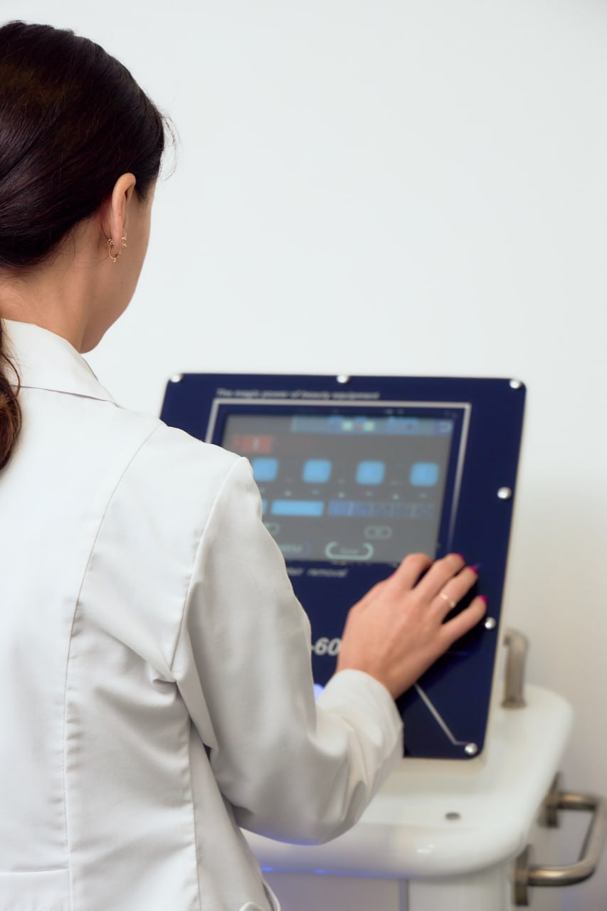

Безболісне та безслідне усунення куперозу, судинних зірочок (ангіом) та розширеної капілярної сітки на обличчі за допомогою передових технологій лазерної коагуляції.
Почервоніння крил носа, виражена судинна сіточка на щоках та поодинокі червоні цятки на обличчі — поширені естетичні проблеми, які практично неможливо замаскувати або вилікувати за допомогою звичайної косметики. Методика лазерного видалення судин базується на принципі селективного фототермолізу.
Лазерний промінь чітко певної довжини хвилі поглинається оксигемоглобіном, що міститься всередині розширеної капіляри. Під впливом тепла стінки судини миттєво злипаються (коагулюють), кровотік у ній припиняється, і з часом вона повністю розсмоктується організмом. Навколишні здорові клітини та епідерміс залишаються абсолютно неушкодженими.

| Зона обробки / Послуга | Ціна за 1 сеанс |
|---|---|
| Видалення судинної зірочки / ангіоми (1 шт.) — точкове усунення елемента | 250 грн |
| Ніс повністю (корекція куперозу в області крил та спинки носа) | 600 грн |
| Підборіддя | 600 грн |
| Щоки (локальна терапія вираженої капілярної сітки) | 1 200 грн |
| Обличчя повністю (комплексна терапія дифузного куперозу) | 2 200 грн |
Для видалення дрібних поодиноких елементів або точкових ангіом часто достатньо всього 1 візиту. Якщо ми працюємо з великим куперозом на щоках або дифузним почервонінням обличчя, може знадобитися курс із 2–4 процедур з інтервалом в 3-4 тижні. Точну кількість сеансів лікар прогнозує на консультації.
Ні, процедура є повністю нетравматичною для поверхні шкіри. Лазер діє вибірково виключно на пошкоджену судину під епідермісом. Одразу після сеансу виникає тимчасове локальне почервоніння, яке безслідно минає протягом кількох годин або 1 дня.
Протягом перших 14 днів після сеансу необхідно захищати шкіру від ультрафіолету та обов'язково наносити сонцезахисний крем із фактором захисту SPF 50+. Також на 2 тижні суворо забороняється відвідувати басейни, лазні, сауни, приймати гарячі ванни та протирати шкіру спиртовмісними тоніками.
Запишіться на лазерне видалення судин до дипломованого лікаря. Швидко, безпечно та без реабілітації позбавтеся ознак куперозу та капілярних сіточок.
Записатись на консультацію